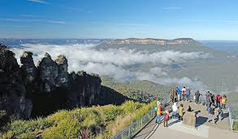
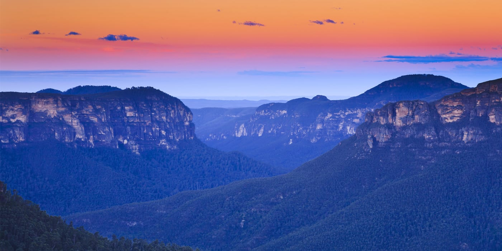
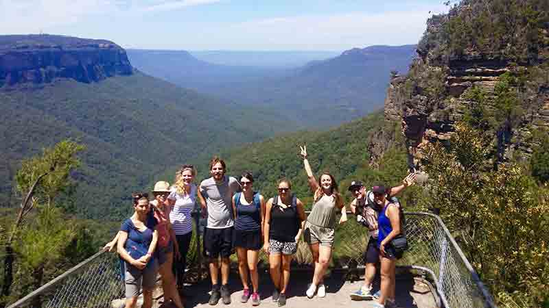

Blue Mountains National Park lies 81 kilometers west of Sydney. Named for the blue haze emanating from the many eucalyptus trees, this stunning park protects more than 664,000 acres of wilderness and encompasses dramatic gorges, waterfalls, aboriginal rock paintings, and 140 kilometers of hiking trails.
The most famous attractions in the park are the towering sandstone rock formations called the Three Sisters. Other highlights include the Katoomba Scenic Railway, the world's steepest, the Skyway, Scenic Cableway, and Scenic Walkway, which all offer elevated views of the dense forests.
Hiking, Abseiling, Rock climbing, Mountain biking, Horseback riding
|  |  |  |